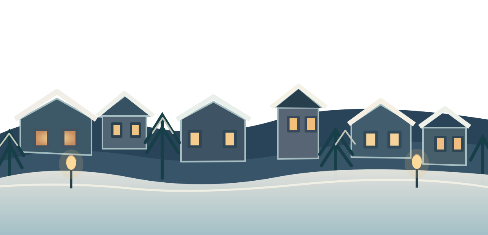

Эйра Линдт
ИКФ · квартира №70«Там, где оставляют свет» — первая история Люсхольма.
Путеводитель по нашему зимнему миру
У каждого своя история. Но свет один на всех.

Небольшой северный город, где свет в окне означает: здесь тебе будут рады.
ИКФЛюсхольм — вымышленный североевропейский город у холодного залива. Здесь есть порт и вечерний паром, старые пекарни, заснеженные улицы и обычные жилые кварталы.
31 декабря в доме «Альбатрос» на Маячной улице, 7, пропадает электричество. В девятиэтажном доме 99 квартир, но жильцы получают приглашения из квартиры №100. Откуда они взялись — пока неизвестно.
Глава 01 · первая героиня
Эйра Линдт · квартира №70 · седьмой этаж
«В Люсхольме существовала одна странная традиция. В последний вечер года люди оставляли у окна маленький фонарь. Считалось, что свет означал простую вещь: здесь тебе будут рады».
Эйра работает с городскими картами. Она уверена, что знает все адреса в доме «Альбатрос». Но странное приглашение заставит ее усомниться даже в этом.